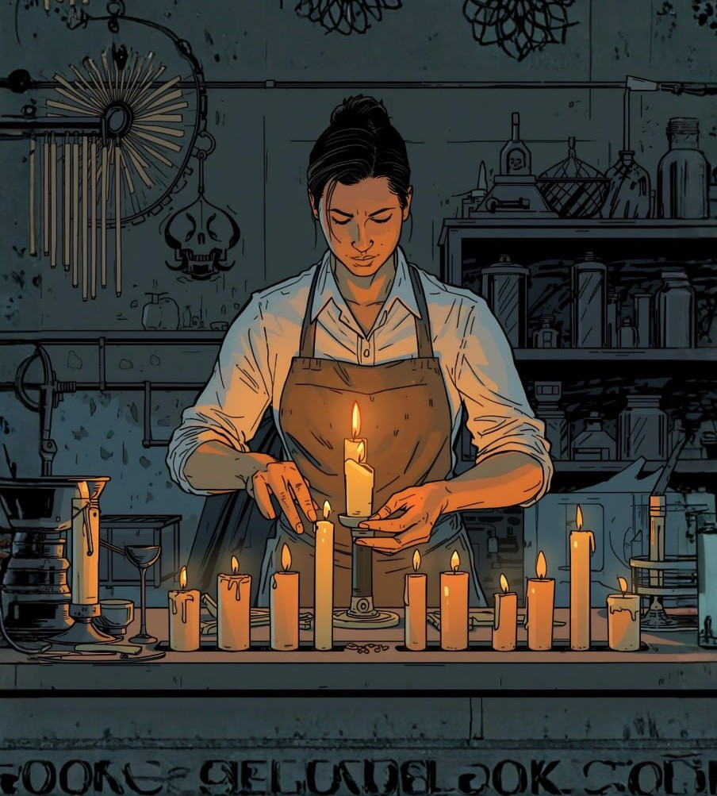
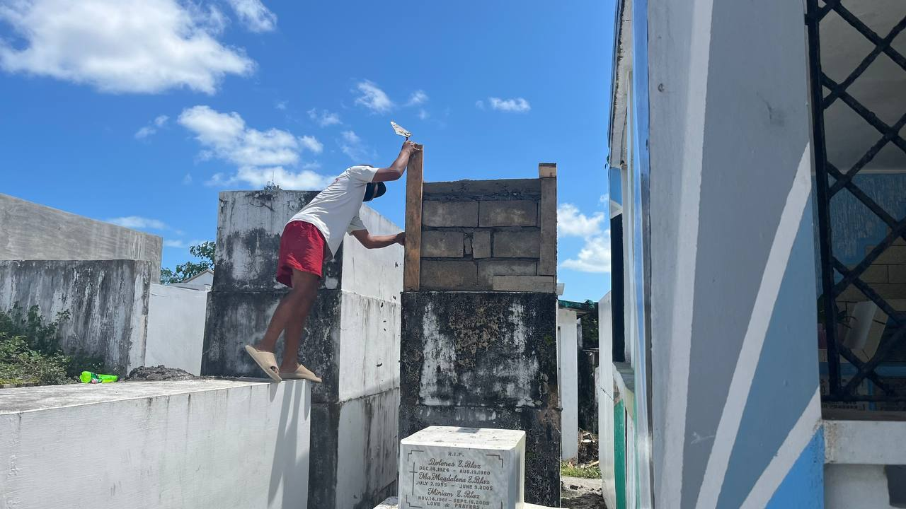
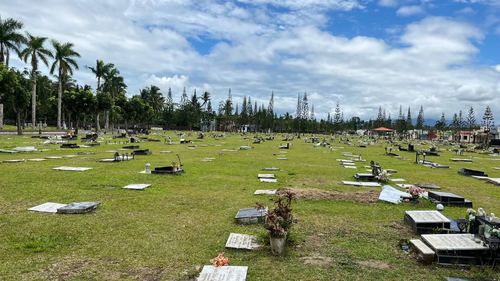

Pamahiin ng nagbebenta ng kandila

Ang tanging pamahiin sa paggawa ng kandila ay ang pagdarasal bago at matapos ang bawat hakbang ng trabaho. Layunin nito na maging maayos ang bawat proseso at makabenta ng maayos, kahit na wala namang direktang epekto sa kabuhayan. Sinusunod ng mga gumagawa ang pamahiing ito bilang bahagi ng kanilang tradisyon at paniniwala, na nagbibigay ng kapanatagan at inspirasyon habang gumagawa.
Sa kabila ng tradisyonal na paniniwalang ito, malinaw na ang tunay na tagumpay sa hanapbuhay ay nakasalalay sa kasipagan, tiyaga, at kalidad ng paggawa. Ang pamahiin ay simbolo lamang ng pag-asa at gabay, hindi isang hadlang sa produktibo o praktikal na pamumuhay. Ipinapakita nito na ang mga tradisyon at paniniwala ay maaaring maging bahagi ng kultura at moral support, ngunit ang maayos na resulta at kita ay bunga ng dedikasyon at mahusay na pamamahala sa bawat yugto ng paggawa ng kandila.
Basahin pa →Pamahiin ng nagbebenta ng bulaklak

May mahalagang papel ang mga pamahiin sa kanilang hanapbuhay. Karaniwan ang paniniwala sa "buena mano," kung saan iniiwasan ang pagpapautang o pagpapabarya bago ang unang benta. Pinaniniwalaan nilang nakatutulong ito sa maayos na daloy ng kita. May iba pang kaugnay na paniniwala, tulad ng hindi agad pagsusukli sa unang mamimili at ang paniniwalang ang uri ng unang bumibili ay maaaring makaapekto sa mga susunod pang transaksyon.
Basahin pa →Pamahiin ng gumagawa ng lapida

Karamihan sa mga gumagawa ng lapida ay walang partikular na pamahiin. Kung mayroon man, ito ay dahil sa karanasan o obserbasyon, tulad ng pagiging maingat sa paghawak ng lapida upang hindi masira ang produkto. Ang pamahiin ay hindi nakakaapekto sa kabuhayan at nakikita nila ang trabaho bilang praktikal at propesyonal.
Ang hanapbuhay sa paggawa ng lapida ay nakatuon sa kasanayan, kalidad, at dedikasyon, kaya ang pamahiin ay hindi bahagi ng pang-araw-araw na kabuhayan. Ipinapakita nito na sa ganitong uri ng propesyon, mas tinitingnan ang resulta ng trabaho kaysa sa mga tradisyonal na paniniwala.
Basahin pa →Pamahiin ng naglilinis at nag-aalaga ng puntod

Karamihan sa mga naglilinis sa sementeryo ay walang partikular na pamahiin na sinusunod. Kung mayroon man, ito ay bunga lamang ng kinagisnan o personal na karanasan, tulad ng maingat na pag-iwas sa pag-apak sa ataul kapag kakalibing pa lamang. Sa pangkalahatan, hindi ito nakakaapekto sa kanilang kabuhayan, at tinitingnan nila ang kanilang trabaho bilang isang praktikal na pinagkakakitaan.
Bagamat bahagi ang pamahiin sa kanilang kultura at tradisyonal na pananaw, ito ay hindi hadlang sa kanilang pang-araw-araw na gawain at kita. Ang tagumpay sa hanapbuhay ay nakasalalay sa kasipagan, pagiging maayos sa trabaho, at tamang pag-aalaga sa kapaligiran ng sementeryo. Sa ganitong paraan, malinaw na ang disiplina at dedikasyon sa trabaho ang mas mahalaga kaysa sa paniniwala.
Basahin pa →Pamahiin ng gumagawa ng ataol o kabaong

May mga pamahiin tulad ng hindi agad pag-uwi pagkatapos gumawa at ang pangangailangang magpagpag matapos galing lamay, na sinasabing nakaiiwas sa malas. Gayunpaman, hindi ito lubos na sinusunod ng lahat at mas inuuna pa rin ang praktikal na gawain. Ang epekto ng pamahiin sa kabuhayan ay hindi gaanong malaki dahil mas nakatuon sila sa trabaho at kalidad ng paggawa.
Ipinapakita nito na ang pamahiin ay bahagi lamang ng tradisyon ngunit hindi pangunahing batayan ng kanilang hanapbuhay. Mas tinitingnan nila ang gawain bilang isang propesyon na nangangailangan ng kahusayan at dedikasyon kaysa sa pagsunod sa mga kaugalian.
Basahin pa →Pamahiin ng make-up artist ng patay

Karamihan sa kanila ay walang matibay o mahigpit na pamahiin na sinusunod sa kanilang hanapbuhay. Gayunpaman, may ilang nakasanayan tulad ng pag-iwas sa paggamit ng hindi magagandang salita at pagiging maingat habang nagtatrabaho, lalo na sa mga sensitibong gawain. Ang ilan ay naniniwala na ang pagiging mahinahon, tahimik, at maingat ay nakakatulong upang maiwasan ang anumang hindi kanais-nais na pangyayari sa trabaho.
Sa kabila nito, hindi gaanong nakakaapekto ang mga pamahiing ito sa kanilang kabuhayan dahil mas nangingibabaw pa rin ang praktikal na paggawa at disiplina sa trabaho. Nagiging bahagi lamang ito ng kanilang kultura sa trabaho at personal na paniniwala, ngunit hindi ito ang pangunahing batayan ng kanilang gawain at desisyon. Ipinapakita nito na ang tagumpay sa kanilang hanapbuhay ay mas nakasalalay sa kasipagan, kaalaman, at maayos na pagsasagawa ng tungkulin kaysa sa pamahiin.
Basahin pa →